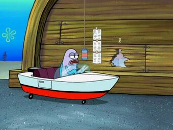
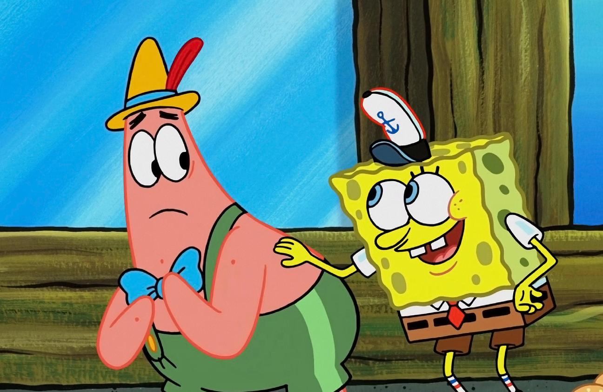
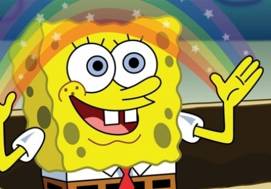

Губка Боб
Лучшие серии
Целых
три классных серии
специально
для тебя
Не выходя из лодки / Крутые гонки

Благодаря неожиданно появившейся дыры в «Красти Бургере» Сквдвард и Спанч Боб теперь обслуживают клиентов на колесах. Но нравится эта затея только мистеру Крабсу. Известнейший в Бикини Боттом Гонщик Тони Фаст отдал своего старшего сына Тони Фаста-младшего в школу лодок миссис Пафф. Преподавательница верит, что талант нового ученика вдохновит остальных сдать экзамены на «отлично», в особенности Губке Бобу.
Экстремальные поры / Беличьи рекорды
 На песчаной горке крутые экстримальные радикалы устроили свое феерическое выступление. Партик и Спанч Боб так впечатлились, что тоже решили вступить в их ряды, но как? Сэнди нашла «Большую книгу курьезов, странностей и мировых рекордов» и теперь планирует всех их переплюнуть. Спанч Боб, как верный друг и любопытный наблюдатель, вызывается ей помочь.
Подражательное помешательство / Ползучие гости
 Спач Боб открыл для себя формулу счастья — нужны всего лишь талант подражателя и капелька лести. Но почему-то со временем всем начинает надоедать креативность губки. В голове Спанч Боба поселяется червячок Щипок. Губка разрешает малышу переночевать, но вскоре у Щипка появляется множество друзей…